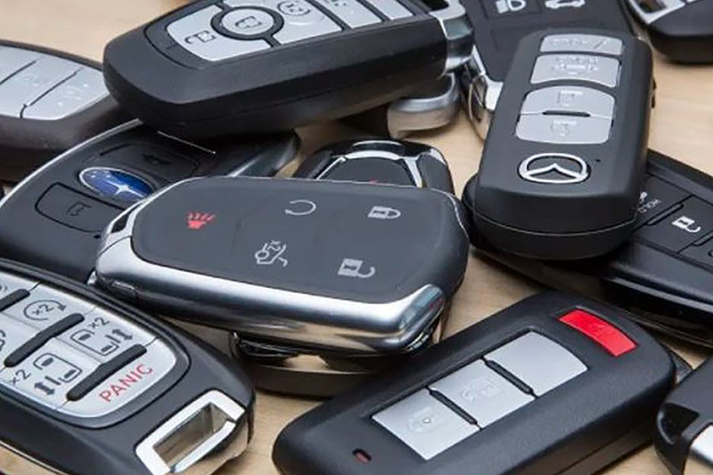

24/7 Emergency Locksmith North London
Locked out? Don't panic. We provide a rapid 24/7 emergency locksmith service across North London with no call-out fee.

How We Can Help in an Emergency
Our emergency services are designed to resolve your situation quickly and securely.
Lockout Services
Whether you're locked out of your home or business, we use non-destructive techniques to get you back inside without damaging your property.
Burglary Repairs
If your property has been broken into, we provide urgent lock repairs and replacements to ensure your home or business is secure again.
Broken Key Extraction
A key snapped in the lock can be stressful. We have the specialist tools to extract the broken part and provide a new key on the spot.
Emergency Response Process
How we handle your emergency
Our streamlined emergency response process ensures you get help quickly and efficiently, with clear communication every step of the way.
- 20-30 minute average response time
- Professional assessment on arrival
- Clear pricing before work begins
- Non-destructive entry methods
Service Coverage & Response Times
Professional emergency locksmith with guaranteed response times across our coverage areas
Haringey
Response time: 20-30 Minutes
Our primary service area - fastest response times guaranteed as we're based locally in Crouch End.
- Crouch End
- Hornsey
- Stroud Green
- Turnpike Lane
- Harringay
- Finsbury Park
- Green Lanes
- Manor House
- Bounds Green
- Wood Green
- Alexandra Palace
- Muswell Hill
- Highgate
- Archway
- Tottenham
- Seven Sisters
- Bruce Grove
- Stamford Hill
- South Tottenham
North London
Response time: 30-40 Minutes
Comprehensive coverage across all North London areas with reliable response times.
- Muswell Hill & Fortis Green
- Islington & Angel
- Camden & Kentish Town
- Finchley & Barnet
- Hampstead & Hampstead Heath
- Highgate & Archway
- Wood Green & Bounds Green
- Tottenham & Seven Sisters
- Enfield & Edmonton
- Haringey & Harringay
- Holloway & Tufnell Park
- King's Cross & St Pancras
- Bloomsbury & Russell Square
- Euston & Warren Street
- Marylebone & Baker Street
Stay Informed Every Step of the Way
From the moment you call or message us via WhatsApp, you’ll be in direct contact with your locksmith. We’ll keep you updated on our exact location and estimated arrival time, so you’re never left wondering when help will arrive.
- Real-time updates via phone or WhatsApp
- Live location sharing on request
- Clear communication throughout your emergency
Professional, Vetted & Insured
When your locksmith arrives, you can expect a courteous, uniformed professional who is fully insured and police-vetted for your peace of mind. We take your security seriously and always carry identification and proof of insurance.
- Police-vetted & DBS checked
- Fully insured for all work
- Respectful, tidy and trustworthy service
Emergency Lockout Tips
What to do while waiting for our emergency locksmith
Need Emergency Locksmith Service?
Available 8:00 AM - 11:00 PM every day • No call-out fee